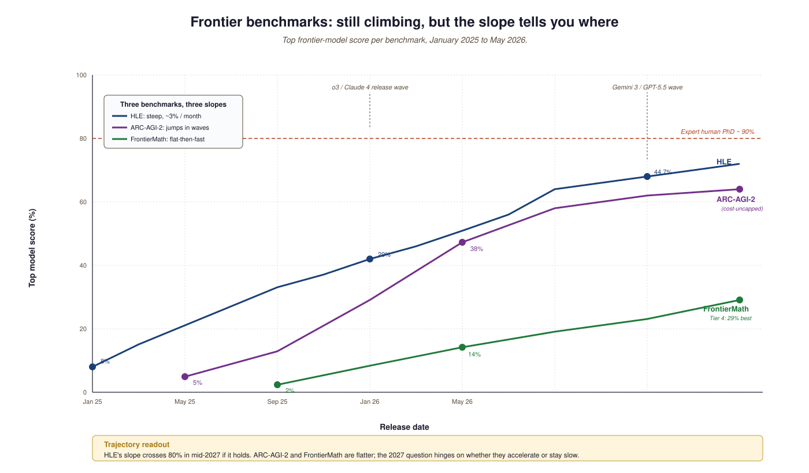

Every era of LLM progress has had a "the benchmark of the moment", and every benchmark has eventually been saturated. GLUE in 2019, MMLU in 2021-22, GSM8K in 2022-23, MATH in 2023-24. By 2025 the leading models were above 90% on all four. Saturation is not just a technical inconvenience: it makes it impossible to tell whether a new model is meaningfully better, only different. The 2025 wave of new benchmarks (Humanity's Last Exam, ARC-AGI-2, FrontierMath) was designed specifically to be hard enough to last two more scaling cycles.
This section walks through each. None will survive forever, but together they paint the clearest picture available of where frontier models actually sit relative to PhD-level human expertise, and where the curve is bending fastest.
64.1.1 Humanity's Last Exam (HLE)
HLE (Phan et al., January 2025; official site) is 2,500 expert-curated questions across 100+ disciplines, deliberately designed to be hard for AI: math proofs, esoteric chemistry, legal interpretation, multimodal reasoning. Top model as of May 2026 is Gemini 3.1 Pro Preview at 44.7%, followed by GPT-5.5 (xhigh) at 44.3% and GPT-5.5 (high) at 43.0%. PhD-level humans in their domain score 90%+; non-expert humans (with internet access) score about 5-10%. HLE is the closest available proxy for "can a model match a domain expert on hard problems".
64.1.2 ARC-AGI-2 (and ARC-AGI-3)
ARC-AGI-2 (Chollet et al., May 2025) is Francois Chollet's update to the original ARC benchmark; it tests fluid pattern-recognition reasoning that does not transfer from internet-scale pretraining. The 2025 ARC Prize results show the top Kaggle submission hit 24% at $0.20/task, while frontier general-purpose reasoning models reached 60%+ at much higher per-task cost. ARC-AGI-3 (early 2026 technical report) is the planned interactive-reasoning successor; first format change to ARC since 2019.
64.1.3 FrontierMath
FrontierMath (Glazer et al., Epoch AI) is the math-research-grade benchmark: hundreds of unpublished problems contributed by professional mathematicians, with held-out solutions to prevent contamination. The June 2025 Tier 4 release introduced 50 problems at research-frontier difficulty; best single-run score is 29%, and the "ever-solved" rate on Tiers 1 through 3 by GPT-5.2 / Claude Opus 4.6 is above 40%. FrontierMath is what changed the consensus that "math reasoning is solved" back to "math reasoning is making fast but partial progress".
64.1.4 Comparing the frontier-2026 benchmarks
| Benchmark | Domain | Size | Top model score | Expert human |
|---|---|---|---|---|
| HLE | Multi-discipline expert | ~2,500 | Gemini 3.1 Pro 44.7% | ~90% |
| ARC-AGI-2 | Visual pattern reasoning | ~400 tasks | ~60% (frontier reasoning), 24% (Kaggle) | ~98% |
| FrontierMath Tier 4 | Research-grade math | 50 | 29% best single run | ~60-80% over time |
| SWE-bench Verified | Real GitHub issues | 500 | ~70% (agentic Claude) | ~95% |
| GPQA Diamond | Graduate science | 198 | ~85% (frontier) | ~74% |

GPQA was unbeatable in 2023; by 2026 frontier models exceed expert PhDs on it. That does not mean models reason better than PhDs: it means GPQA's questions, once the model can read every Wikipedia article, can be answered through pattern matching and broad knowledge. HLE and FrontierMath are designed specifically to break this pattern. The right way to read benchmark numbers in 2026 is: high MMLU is necessary but not sufficient; high HLE / FrontierMath is the genuine progress signal.
ARC-AGI-2 publishes scores at multiple cost tiers ($0.20/task, $2.50/task, $100/task). A model that scores 60% on ARC at $100 per task and a model that scores 24% on ARC at $0.20 per task are not directly comparable. The same logic applies to reasoning-mode budgets on GPT-5.5 and Claude Opus 4.6: high-thinking mode is expensive, low-thinking mode is fast, and the published benchmark number is usually the expensive setting. Always check the cost column before drawing conclusions.
The leaderboards listed in Section 12.5 cover dozens of benchmarks; you do not need to track them all. The three that capture the 2026 frontier are HLE (knowledge breadth + depth), ARC-AGI-2 (fluid reasoning), and SWE-bench Verified (real engineering tasks). If a new model moves all three, it is genuinely better. If it moves only one, it has probably been optimized specifically for that benchmark.
64.1.5 What the benchmark trajectory implies
The benchmarks above are still climbing, but the rate is slowing. HLE jumped from 8% (GPT-4o, January 2025) to 44% (Gemini 3.1 Pro, May 2026) in fifteen months; a similar fifteen months from now would put 80% in reach if the curve holds, and into the noise of disagreement-about-correct-answers if it does not. ARC-AGI-2 and FrontierMath are flatter trajectories. Whether those flatten further or accelerate is one of the things Section 64.3's timeline question will hinge on. First, Section 64.2 takes up the alignment-at-frontier-scale question: what does it mean to align a model whose capabilities you cannot fully measure?